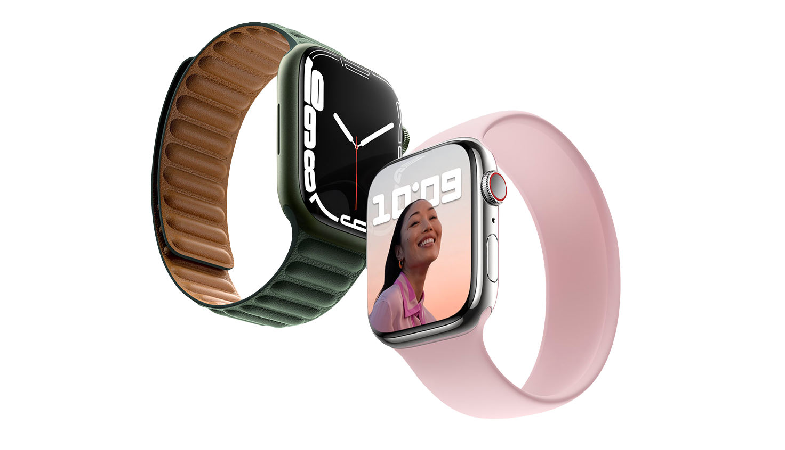

The Apple Watch Series 7 features larger displays and casing sizes, the S7 chip, improved durability, new options colors for the aluminum models, and faster charging. Pre-orders opened on Friday, October 8, and the first Apple. Watch Series 7 orders are set to arrive one week later on Friday, October 15.
Apple today announced that it will be holding a special event on Monday, October 18 at 10:00 a.m. Pacific Time. The event is set to take place at the Steve Jobs Theater on the Apple Park campus in Cupertino, California, and it will once again be a digital only event. iPhone 13 Pro and iPhone 13 Pro Max will be available in four stunning finishes, including graphite, gold, silver, and the all-new sierra blue. Pre-orders begin Friday, September 17, with availability beginning Friday, September 24.
With new sensors and lenses for all three rear cameras, optimized to work seamlessly with iOS 15 and powered by the new image signal processor (ISP) in A15 Bionic for improved noise reduction and tone mapping, the iPhone 13 Pro lineup features the best camera system ever on iPhone. The all-new Wide camera has a larger sensor with 1.9 µm pixels, the largest ever on iPhone, for less noise and faster shutter speeds needed across lighting conditions, producing even more detailed photos. When there are a lot of products coming in the fall months, Apple often holds a second October or November event, which is the case in 2021. Rumors have been teasing redesigned 14 and 16-inch MacBook Pro models for months now.
Apple today seeded the fourth betas of upcoming iOS 15.1 and iPadOS 15.1 betas to developers for testing purposes, one week after seeding the third betas and three weeks after releasing iOS 15 and iPadOS 15 to the public.iOS and iPadOS 15.1 can be downloaded through the Apple Developer Center or over the air after the proper profile has been installed on an iPhone or iPad.SharePlay makes a return in iOS 15.1, with Apple once again testing the feature that was removed before the launch of iOS 15.